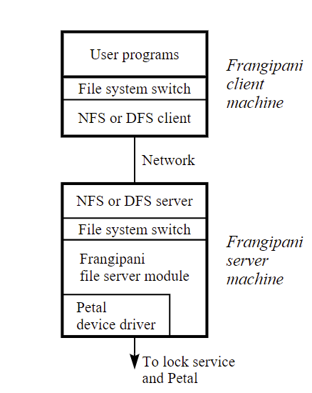

Frangipani: A Scalable Distributed File System 翻译 上
Frangipani: 一个可伸缩的分布式文件系统
摘要
理想的分布式文件系统应该为所有用户提供对同一组文件的一致的统一的访问，并且可以任意伸缩，以便为不断增长的用户社区提供更多的存储空间和更高的性能。尽管组件出现故障，但它仍然具有很高的可用性。这将需要最少的人工管理，并且随着添加更多组件，管理不会变得更加复杂。
Frangipani是一种新的文件系统，它近似于这种理想状态，而且由于它的两层结构，构建起来相对容易。底层是Petal(在之前的文章描述过)，这是一种分布式存储服务，提供可扩展、高可用性、自动管理的虚拟磁盘。在上层，多台机器在共享的Petal虚拟磁盘上运行相同的Frangipani文件系统代码，使用分布式锁服务来确保一致性。
Frangipani是在拥有统一管理下的集群中运行的，可以安全的通信。因此，机器之间相互信任，共享虚拟磁盘方法是可行的。当然，Frangipani文件系统可以使用普通网络文件访问协议剔除不受信任的机器。
我们在运行数码UNIX 4.0的AlphaS集合上实施了Frangipani。初始测量表明，Frangipani随着服务器的增加，其依然具有优异的单服务器性能和可扩展性。
1 介绍
使用当下技术构建的可应用于大型、持续增长的计算机集群的文件管理系统，处理现有业务来说是一项艰巨的任务。其困局是，为了保存更多文件并为更多用户提供服务，必须添加更多磁盘，连接到更多机器上。 这些组件中的每一个都需要人工维护。 文件组通常手动分配到特定磁盘，然后在组件装满、出现故障或成为性能热点时手动移动或复制。 使用RAID技术将多个磁盘驱动器连接成一个单元只是部分解决方案；当系统变得足够大，需要多个raid和多个服务器时，仍然会出现管理问题。
Frangipani是一种新的可扩展的分布式文件系统，它将多台机器上的磁盘集合管理为一个共享存储池。假定这些机器处于共同的管理之下，并且能够安全地通信。在构建分布式文件系统方面，已经有很多早期的尝试，它们在吞吐量和容量上都有很好的扩展性[1,11,19,20,21,22,26,31,33,34]。Frangipani的一个显著特征是它有一个非常简单的内部结构—一组相互协作的机器使用一个公共存储并用锁同步对该存储的访问。这个简单的结构使我们能够用很少的机器处理系统恢复、重新配置和负载平衡。Frangipani的另一个关键在于，它结合了一组特性，使其比我们所知道的现有文件系统更容易使用和管理Frangipani。
- 所有用户都会给出相同一组文件的一致视图。
- 可以轻松地将更多服务器添加到现有Frangipani集群中，以增加其存储容量和吞吐量，而无需更改现有服务器的配置或中断其操作。这些服务器可以被看作是“砖块”，可以增量堆叠，以根据需要构建尽可能大的文件系统。
- 系统管理员可以添加新用户，而无需考虑哪些计算机将管理其数据或哪些磁盘将存储数据。
- 系统管理员可以在不关闭整个文件系统的情况下对整个文件系统进行完整且一致的备份。备份可以在线保存，允许用户快速访问意外删除的文件。
- 文件系统能够容忍机器、网络和磁盘故障，并在无需操作员干预的情况下进行恢复。
Frangipani位于Petal[24]之上，Petal是一个易于管理的分布式存储系统，它为客户端提供虚拟磁盘。与物理磁盘一样，Petal虚拟磁盘提供了可以在块中读写的存储空间。与物理磁盘不同，虚拟磁盘提供不连续的264字节地址空间，物理存储空间按需分配。Petal可以选择性的复制数据以实现高可用性。Petal还提供了高效的快照[7,10]来支持一致的备份。Frangipani从底层存储系统继承了许多可伸缩性、容错性和易于管理的特性，但是需要仔细设计才能将这些属性扩展到文件系统级别。下一节将详细介绍Frangipani的结构及其与Petal的关系。
图1演示了Frangipani系统中的分层。多个可互换的Frangipani服务器通过在共享的Petal虚拟磁盘上运行来提供对相同文件的访问，用锁来协调它们的操作，以确保一致性。文件系统层可以通过添加Frangipani服务器来缩放。它通过自动从服务器故障中恢复并继续使用幸存的服务器来实现容错。它在单一的网络文件服务器上提供了改进的负载平衡，通过分流文件系统负载并将其转移到正在使用这些文件的机器上。Petal和锁服务也被用于在可伸缩性、容错和负载平衡方面。
Frangipani服务器，Petal服务器和锁服务相互信任。Frangipani设计之初用于在单个管理域内的工作站集群中运行良好，但Frangipani文件系统可以导出到其他域。因此，Frangipani可以看作是一个集群文件系统。
我们已经在DIGITAL Unix 4.0下实现了Frangipani。由于Frangipani在现有Petal服务之上的清晰分层，我们能够在短短几个月内实现一个工作系统。
Frangipani针对具有程序开发和工程工作负载的环境。我们的测试表明，在此类工作负载上，Frangipani具有出色的性能，并缩小网络限制。
2 系统结构
图2描述了系统的一个经典情况。上面显示的机器运行用户程序和Frangipani文件服务器模块；它们可以是无磁盘的。底部显示的运行Petal和分布式锁服务。
Frangipani的组件不必完全按照图2所示的方式分配给机器。Frangipani和Petal服务器不需要在单独的机器上；每台Petal机器也可以运行Frangipani，特别是在花瓣机器没有重载的情况下。分布式锁服务独立于系统的其他部分;我们展示了在每台Petal服务器上运行一个lock服务器，但它们也可以在Frangipani主机或任何其他可用的机器上运行。
2.1 组件
如图2所示，用户程序通过标准操作系统调用接口访问Frangipani。在不同机器上运行的程序都看到相同的文件，它们的视图是一致的；也就是说，对一台计算机上的文件或目录所做的更改在所有其他计算机上都立即可见。程序基本上得到了与本地Unix文件系统相同的语义保证：对文件内容的更改通过本地内核缓冲池暂存，在下一次适用的fsync或sync系统调用之前不能保证到达非易失性存储，但是元数据的更改会被记录下来，并且可以选择在系统调用返回时保证为非易失性。与本地文件系统语义稍有不同的是，Frangipani仅粗略地维护一个文件的最后访问时间，以避免每次读取数据时都进行元数据写操作
元数据：将元数据定义为除普通文件内容以外的任何磁盘数据结构。
每台机器上的Frangipani文件服务器模块在操作系统内核内运行。它将自己注册到内核的文件系统中，作为可用的文件系统实现之一。文件服务器模块使用内核的缓冲池来缓存最近使用的文件中的数据。它使用本地Petal设备驱动程序读取和写入Petal虚拟磁盘。所有文件服务器在共享Petal磁盘上读取和写入相同的文件系统数据结构，但每个服务器在Petal磁盘的不同部分保留其自己的挂起更改重做日志。日志保存在Petal中，以便在Frangipani服务器崩溃时，另一台服务器可以访问日志并运行恢复。Frangipani服务器之间不需要直接通信；它们只与Petal和锁服务通信。这使服务器的添加、删除和恢复变得简单。
Petal设备驱动程序隐藏了Petal的分布式特性，使得Petal对于操作系统的更高层来说就像一个普通的本地磁盘。驱动程序负责于对应的Petal服务器通信，并在发生故障时切换到另一个服务器。任何Digital Unix文件系统都可以在Petal上运行，但只有Frangipani提供了从多台机器对相同文件的一致访问。
Petal服务器协同运行，为Frangipani提供大型的、可伸缩的、容错的虚拟磁盘，这些虚拟磁盘是在连接到每个服务器的普通物理磁盘之上实现的。Petal可以容忍一个或多个磁盘或服务器故障，只要Petal服务器的大部分保持正常并保持通信，每个数据块至少有一个副本保持物理上可访问。花瓣的更多细节可在另一份文件[24]。
锁服务是一种通用服务，它向网络上的客户端提供多读/单写锁。它的实现是分布式的，以容错和可扩展的性能。Frangipani使用锁服务来协调对虚拟磁盘的访问，并在多个服务器上保持缓冲区缓存一致。
2.2 安全和客户端/服务器配置
在图2所示的配置中，运行用户程序的每台计算机也运行一个Frangipani文件服务器模块。这种配置有可能实现良好的负载平衡和扩展，但会带来安全问题。任何Frangipani机器都可以读取或写入共享Petal虚拟磁盘的任何块，因此Frangipani必须仅在具有可信操作系统的机器上运行；Frangipani机器向Petal验证自己是否代表特定用户是不够的，就像在NFS等远程文件访问协议中所做的那样。完全安全性还要求Petal服务器和锁服务器在受信任的操作系统上运行，并要求所有三种类型的组件彼此进行身份验证。最后，为了确保文件数据保密，应防止用户在连接Petal和Frangipani机器的网络上窃听。
通过将机器放置在一个环境中，防止用户在机器上启动修改过的操作系统内核，并将其与用户进程无权访问的专用网络互连，可以完全解决这些问题。这并不一定意味着必须将机器锁定在具有专用物理网络的房间中；可以使用已知的用于安全引导、身份验证和加密链接的加密技术[13,37]。此外，在许多应用中，部分解决方案是可以接受的；典型的现有NFS安装对于在工作站上引导修改过的内核的用户的网络窃听甚至数据修改都不安全。到目前为止，我们还没有实施任何这些安全措施，但是我们可以通过让Petal服务器只接受来自属于受信任的Frangipani服务器机器的网络地址列表的请求，大致达到NFS安全级别。
Frangipani文件系统可以使用图3所示的配置导出到管理域之外的不受信任的机器。这里我们区分Frangipani客户端和服务器。只有受信任的Frangipani服务器与Petal和锁服务通信。它们可以位于受限环境中，并通过如上所述的专用网络互连。远程、不受信任的客户端通过单独的网络与Frangipani服务器通信，无法直接访问Petal服务器。

客户端可以使用主机操作系统支持的任何文件访问协议（如DCE/DFS、NFS或SMB）与Frangipani服务器通信，因为Frangipani看起来就像运行Frangipani服务器的机器上的本地文件系统。当然，一个支持一致性访问的协议(例如 DCE/DFS)是最好的，这样Frangipani跨多个服务器的一致性就不会在下一级丢失。( ? ) 理想情况下，该协议还应该支持从一个Frangipani服务器到另一个Frangipani服务器的故障转移。刚才提到的协议不直接支持故障转移，但是让新机器接管故障机器的IP地址的技术已经在其他系统中使用过[3,25]，也可以在这里应用。
除了安全性之外，使用此客户机/服务器配置还有第二个原因。因为Frangipani在内核中运行，所以它不能在不同的操作系统甚至不同版本的Unix之间快速移植。客户端可以通过远程访问受支持的系统，从不受支持的系统使用Frangipani。
2.3 讨论
将文件系统分为两层构建的想法——较低级别提供存储库，较高级别提供名称、目录和文件——并不是Frangipani所独有的。我们知道的最早的例子是通用文件服务器[4]。然而，Petal提供的存储设施与早期的系统有很大不同，这也导致了不同的更高级别结构。第10节包含与以前系统的详细比较。
Frangipani的设计目的是与Petal提供的存储空间配合使用。我们还没有充分考虑开发NASD等替代存储抽象所需的设计更改[13]。
Petal提供了高可用性存储，可以随着资源的添加而扩展吞吐量和容量。然而，Petal没有提供在多个客户端之间协调或共享存储的功能。此外，大多数应用程序不能直接使用Petal的客户端接口，因为它是磁盘类型而不是文件类型。Frangipani提供了一个文件系统层，使Petal在保留和扩展其良好属性的同时对应用程序有用。
Frangipani的优势在于它允许透明的添加服务器、删除和故障恢复。通过将预写式日志和锁与一个统一的可访问的、高可用性的存储结合起来，它能够轻松地做到这一点。
Frangipani的另一个优势是它能够在系统运行时创建一致的备份。第8节讨论了Frangipani的备份机制。
Frangipani的设计有三个方面可能会有问题。将Frangipani与复制的Petal虚拟磁盘一起使用，意味着日志记录有时会发生两次，一次是到Frangipani日志，另一次是在Petal本身。其次，Frangipani在放置数据时不使用磁盘位置信息，事实上它不能，因为Petal虚拟了磁盘。最后，Frangipani锁定整个文件和目录，而不是单个块。我们没有足够的使用经验来评估我们设计的这些方面，但尽管如此，Frangipani在我们测试的工程工作负载上的测量性能还是不错的。
3 磁盘布局
Frangipani使用Petal的大而稀疏的磁盘地址空间来简化其数据结构。这个总体思路让人想起了过去在大内存地址空间的计算机编程工作。有这么多的地址空间可用，可以慷慨地将其分割开来。
Petal虚拟磁盘有264字节的地址空间。Petal仅在写入虚拟地址时才将物理磁盘空间提交给虚拟地址。Petal还提供了一个decommit原语，可以释放支持一系列虚拟磁盘地址的物理空间。
为了保持内部数据结构的小型化，Petal以相当大的块（目前为64 KB）提交和释放空间。也就是说，每个64 KB的地址范围【a*216，(a+1)*216】（其中一些数据已写入且未解除提交）都分配有64 KB的物理磁盘空间。因此，Petal客户机不能使其数据结构过于稀疏，否则过多的物理磁盘空间将因碎片化而被浪费。图4显示了Frangipani是如何划分其虚拟磁盘空间的。
第一个区域存储共享的配置参数和内务管理信息(housekeeping information,不太理解)。我们允许这个区域有一兆字节（TB）的虚拟空间，但实际上目前只使用了其中的几千字节。
第二个区域存储日志。每台Frangipani服务器获得 一部分空间来存放它的私人日志。我们已经为这个区域保留了 1TB（240字节）给这个区域，划分为256个日志。这 这个选择限制了我们目前的实施，使其只能容纳256个服务器，但这很容易进行调整。
第三个区域用于分配位图，以描述剩余区域中的哪些块是空闲的。每个Frangipani服务器都会锁定位图空间的一部分以供其专用。当服务器的位图空间填满时，它会查找并锁定另一个未使用的部分。位图区域的长度为3 TB。
第四个区域存放节点。每个文件都需要一个inode来保存其元数据，如时间戳和指向其数据位置的指针。符号链接将其数据直接存储在inode节点中。我们将节点的长度定为512字节，也就是一个磁盘块的大小，从而避免了服务器之间不必要的争夺（“虚假共享”），如果两个服务器需要访问同一块中的不同节点，就会出现这种情况。我们分配了1TB的节点空间，允许231个节点的空间。分配位图和节点之间的映射是固定的，所以每个Frangipani服务器只从与分配位图的部分相对应的节点空间中为新文件分配节点。但任何Frangipani服务器都可以读取、写入或释放任何现有文件的节点。
第五个区域存放小数据块，每个4 KB（212字节）大小。一个文件的前64 KB（16个块）被存储在小块中。如果一个文件增长到超过64KB，剩下的就存储在一个大块中。我们为小块分配247个字节，因此最多允许有235个小块，是最大节点数的16倍。
Petal地址空间的其余部分存放大数据块。每个大数据块都保留了1TB的地址空间。
我们使用4KB块的磁盘布局策略可能会比更谨慎地支配磁盘空间的策略遭受更多的碎片。另外，为每个节点分配512字节的空间也有些浪费。我们可以通过将小文件存储在inode本身来缓解这些问题[29]。我们的设计所获得的是简单性，我们相信这对于额外的物理磁盘空间的成本来说是一个合理的权衡。
目前的方案将Frangipani限制在略低于224（1600万）大文件，其中大文件是指大于64KB的任何文件。另外，任何文件都不能大于16个小块加一个大块（64KB加1TB）。如果这些限制被证明太小，我们可以很容易地减少大块的大小，从而使更多的数量可用，并允许大文件跨越一个以上的大块，从而提高最大文件大小。如果264字节的地址空间限制被证明是不够的，一个Frangipani服务器可以在多个虚拟磁盘上支持多个Frangipani文件系统。
我们根据早期文件系统的使用经验，选择了这些文件系统参数。我们相信我们的选择将为我们提供良好的服务，但只有时间和使用才能证实这一点。Frangipani的设计足够灵活，我们可以以文件系统的备份和恢复为代价来试验不同的布局。
在本节中，文件一词包括目录、符号链接等。
4 记录和恢复
Frangipani使用元数据的预写重做日志记录来简化故障恢复并提高性能；用户数据不被记录。每个Frangipani服务器在Petal中都有自己的私有日志。当Frangipani文件服务器需要进行元数据更新时，它首先创建一个描述更新的记录，并将其附加到其内存中的日志中。这些日志记录会按照它们所描述的更新被请求的顺序定期写入Petal。(我们可以选择让日志记录同步写入。这提供了更好的故障语义，但增加了元数据操作的延迟。）。只有在日志记录
被写入Petal之后，服务器才会修改其固定位置中的实际元数据。Unix update demon会定期（大约每30秒）更新固定位置。
日志的大小是有限制的，在目前的实现中是128KB。考虑到Petal的分配策略，一个日志将由两个不同的物理磁盘上的两个64KB的片段组成。为每个日志分配的空间被作为一个循环缓冲区管理。当日志填满时，Frangipani会回收最旧的25%的日志空间，用于新的日志条目。通常情况下，回收区域的所有条目都是指已经写入Petal的元数据块（在之前的同步操作中），在这种情况下，不需要进行额外的Petal写入。如果有尚未写入的元数据块，这项工作将在日志被回收之前完成。考虑到日志的大小和Frangipani日志记录的典型大小（80-128字节），如果在两个周期性同步操作之间有大约1000-1600个修改元数据的操作，日志就会被填满。
如果一个Frangipani服务器崩溃了，系统最终会检测到失败，并在该服务器的日志上运行恢复。故障可能是由故障服务器的客户端检测到的，或者当锁服务要求故障服务器返回它所持有的锁而没有得到答复时。恢复守护进程被隐式的赋予失败服务器的日志和锁的所有权。该守护进程找到日志的开始和结束，然后按顺序检查每条记录，执行每一个尚未完成的描述性更新。在日志处理完成后，恢复进程释放其所有的锁并释放日志。然后，其他Frangipani服务器可以不受故障服务器的阻碍，故障服务器本身也可以选择重新启动（有一个空日志）。只要底层的Petal卷保持可用，系统就可以容忍无限数量的Frangipani服务器故障。
为了确保恢复能够找到日志的结尾（即使磁盘控制器不按顺序写入数据），我们在日志的每个512字节块上附加一个单调增加的日志序列号。通过找到一个低于前一个的序列号，可以可靠地检测到日志的结束。
Frangipani确保在有多个日志的情况下，日志和恢复工作正常。这需要注意几个细节。
首先，Frangipani的锁协议，在下一节中描述，确保不同服务器对相同数据的更新请求是序列化的。覆盖脏数据的写锁只有在脏数据被写入 Petal 之后才能更改所有者，可以是原始锁持有者写入，也可以是代表它运行的恢复进程写入。这意味着对于任何给定的块，最多只能有一个日志保存未完成的更新。
其次，Frangipani确保恢复只适用于自服务器获得覆盖它们的锁后所记录的更新，并且它仍然持有这些锁。这是为了确保锁协议所规定的序列化不被违反而需要的。我们通过强制执行一个更强的条件来实现这一保证：恢复绝不重复描述已经完成的更新的日志记录。为了实现后者，我们在每个512字节的元数据块上保留一个版本号。元数据如目录，它跨越了多个块，有多个版本号。对于日志记录所更新的每一个块，该记录包含了对更改的描述和新的版本号。在恢复过程中，只有当块的版本号小于记录的版本号时，才会应用对块的修改。
因为用户数据的更新没有被记录下来，只有元数据块有预留空间给版本号。这就产生了一个强制性的问题。如果一个块被用于元数据，被释放，然后又被重新用于用户数据，那么在版本号被错误的用户数据覆盖后，引用该块的旧日志记录可能不会被正确跳过。Frangipani通过重用释放的元数据块来保存新的元数据，从而避免了这个问题。
最后，Frangipani确保在任何时候只有一个恢复进程试图重放特定服务器的日志区域。锁服务通过授予活动的恢复进程对日志的独占锁来保证这一点。
Frangipani的记录和恢复方案假定，磁盘写入失败会使单个扇区的内容处于旧状态或新状态，但绝不会同时处于这两种状态。如果一个扇区被损坏，以至于读取它时出现CRC错误，Petal的内置复制通常可以恢复它。如果一个扇区的两个副本都丢失了，或者Frangipani的数据结构被软件错误破坏了，就需要一个元数据一致性检查和修复工具（像Unix fsck）。到目前为止，我们还没有实现这样的工具。
Frangipani的日志不是为了向用户提供高级别的语义保证。它的目的是提高元数据更新的性能，并通过避免每次服务器故障时运行fsck等程序来加速故障恢复。只有元数据被记录下来，而不是用户数据，所以用户不能保证在故障后文件系统的状态在他看来是一致的。我们并不声称这些语义是理想的，但它们与标准的本地Unix文件系统所提供的相同。在本地 Unix 文件系统和 Frangipani 中，用户可以通过在适当的检查点调用 fsync 来获得更好的一致性语义。
Frangipani的日志记录是应用了最早为数据库开发的技术[2]，后来被用于其他几个基于日志的文件系统[9, 11, 16, 18]。Frangipani不是一个日志结构的文件系统[32]；它不把所有的数据保存在日志中，而是维护传统的磁盘数据结构，用一个小的日志作为辅助，以提供更好的性能和故障原子性。与上述其他基于日志的文件系统不同，但与日志结构的文件系统Zebra[17]和xFS[1]一样，Frangipani保留多个日志。
5 同步和缓存的一致性
由于多个Frangipani服务器都在修改共享的磁盘数据结构，因此需要谨慎地进行同步，以便为每个服务器提供一致的数据视图，同时允许有足够的并发性，以便在负载增加或服务器增加时扩展性能。Frangipani使用多读/单写锁来实现必要的同步。当锁服务检测到冲突的锁请求时，会要求锁的当前持有者释放或降级以消除冲突。
一个读锁允许服务器从磁盘上读取相关数据并进行缓存。如果一个服务器被要求释放它的读锁，它必须在遵守之前使其缓存条目失效。写锁允许服务器读取或写入相关的数据并缓存它。服务器缓存的磁盘块副本只有在它持有相关的写锁时才能与磁盘上的版本不同。因此，如果一个服务器 被要求释放其写锁或将其降级为读锁，它必须在遵守之前将脏数据写到磁盘。如果是降级锁，它可以保留其缓存条目，但如果释放锁，则必须使其失效。
当写锁被释放或降级时，我们可以选择绕过磁盘，将脏数据直接转发给请求者，而不是将脏数据刷到磁盘。出于简单的原因，我们没有这样做。首先，在我们的设计中，Frangipani服务器不需要相互通信。它们只与Petal和锁服务器进行通信。其次，我们的设计确保当一个服务器崩溃时，我们只需要处理该服务器使用的日志。如果直接转发脏缓冲区，并且具有脏缓冲区的目标服务器崩溃，那么指向脏缓冲区的日志条目可能分布在多台机器上。这将给恢复和在日志空间填满时回收日志空间带来问题。
我们将磁盘上的结构分为逻辑段，并为每个段加锁。为了避免错误的共享，我们确保一个磁盘扇区不包含一个以上可以共享的数据结构。我们将磁盘上的数据结构划分为可上锁的段，旨在保持锁的数量合理地少，但又能避免普通情况下的锁争夺，从而使锁服务不成为系统的瓶颈。
因为日志是私有的，所以每个日志都是一个单独的可锁定段。位图空间也被划分为独占锁定的段，这样当分配新文件时就不会有争用。当前未分配给文件的数据块或索引节点受到分配位图段上的锁的保护，该段上的锁持有标记为空闲的位。最后，每个文件、目录或符号链接都是一个段;也就是说，一个锁同时保护inode和它所指向的任何文件数据。这种每个文件的锁粒度适合于很少并发写共享的工程工作负载。然而，其他工作负载可能需要更细粒度的锁定。
有些操作需要原子化的更新由不同锁覆盖的几个磁盘数据结构。我们通过对这些锁进行全局排序并在两个阶段获得这些锁来避免死锁。首先，一个服务器确定它需要什么锁。这可能涉及到获取和释放一些锁，例如在一个目录中查找名字。其次，它按照节点地址对锁进行排序，并依次获取每个锁。然后，服务器检查它在第一阶段检查的任何对象是否在其锁被释放时被修改。如果是的话，它就释放锁，并循环重复第一阶段。否则，它就执行操作，弄脏缓存中的一些块，并写一条日志记录。它保留每个锁，直到它覆盖的脏块被写回磁盘。
我们刚刚描述的缓存一致性协议与Echo[26]、Andrew文件系统[19]、DCE/DFS[21]和Sprite[30]中用于客户端文件缓存的协议相似。避免死锁的技术与Echo的类似。和Frangipani一样，Oracle数据库（Oracle Parallel Server），也是将脏数据写入磁盘，而不是在写入锁的后续所有者之间使用缓存到缓存的传输。
6 锁服务
Frangipani只需要其lock server的一小部分通用功能，而且我们不希望该服务在正常运行中成为性能瓶颈，因此许多不同的实现可以满足其要求。在Frangipani项目的过程中，我们已经使用了三种不同的lock server的实现，并且其他现有的lock server可以提供必要的功能，也许只需在上面加一层薄薄的代码。
lock server提供多读/单写锁。锁是粘性的；也就是说，一个客户端通常会保留一个锁，直到其他客户端需要一个冲突的锁。(回顾一下，锁服务的客户端是Frangipani服务器）。
锁定服务使用租约来处理客户端故障[15, 26]。当一个客户端第一次通讯lock server时，它获得了一个租约。客户端获得的所有锁都与租约相关。每个租约都有一个过期时间，目前设置为创建或最后一次更新后的30秒。客户端
必须在到期时间前更新其租约，否则服务会认为它已经失败。
网络故障可以阻止Frangipani服务器更新其租约，即使它没有崩溃。当这种情况发生时，服务器会丢弃它所有的锁和缓存中的数据。如果缓存中的任何东西是脏的，Frangipani会打开一个内部标志，使所有来自用户程序的后续请求返回一个错误。文件系统必须被卸载以清除这个错误状况。我们选择了这种激烈的报错方式，使它难以被无意中忽略。
我们最初的lock server实现是一个单一的、集中的服务器，它将所有的锁状态保存在易失性内存中。这样的服务器对Frangipani来说是足够的，因为Frangipani servers和他们的日志持有足够的状态信息，即使锁服务在崩溃中失去了所有的状态，也可以恢复。然而，锁服务的失败将导致一个巨大的性能故障。
我们的第二个实施方案将锁的状态存储在Petal虚拟磁盘上，在返回客户端之前，将每个锁的状态变化写到Petal上。如果主lock server崩溃了，备份服务器将从Petal中读取当前状态并接管，以提供持续服务。有了这个方案，故障恢复更加透明，但普通情况下的性能比集中式的内存方法要差。在进入下一个实施方案之前，我们没有完全实现对所有故障模式的自动恢复。
我们的第三个也是最后一个锁服务实现是完全分布式的，用于容错和可扩展的性能。它由一组相互合作的锁服务器和一个连接到每个Frangipani服务器的办事员模块组成。
锁服务将锁组织成由ASCII字符串命名的表。表内的各个锁是由64位整数命名的。回顾一下，一个Frangipani文件系统只使用一个Petal虚拟磁盘，尽管多个Frangipani文件系统可以安装在同一台机器上。每个文件系统都有一个与之相关的表。当一个Frangipani文件系统被挂载时，Frangipani服务器调用clerk，打开与该文件系统相关的锁表。锁服务器在成功打开时给clerk一个租赁标识符，这个标识符被用于他们之间所有的次序通信。当文件系统被卸载时，clerk关闭锁表。(clerk翻译应该有点问题，我理解的客户端)
客户端和锁服务器通过异步消息而不是RPC进行通信，以尽量减少内存的使用量，并实现良好的灵活性和性能。对锁进行操作的基本消息类型是请求、授予、撤销和释放。请求和释放消息类型是由客户端发送给锁服务器的，而授予和撤销消息类型是由锁服务器发送给客户端的。锁的升级和降级操作也是使用这四种消息类型处理的。
锁服务使用一个容错的分布式故障检测机制来检测锁服务器的崩溃。这与Petal使用的机制相同。它是基于各组服务器之间及时交换心跳信息。它使用多数共识来容忍网络分区。
锁在服务器和每个clerk那里都要消耗内存。在我们目前的实现中，服务器为每个锁分配了112个字节的块，此外还有104个字节给每个有未决或已批准的锁请求的clerk。每个客户端每个锁占用232字节。为了避免因为粘性锁而消耗过多的内存，clerk 会丢弃那些长时间（1小时）没有使用的锁。
使用Lamport的Paxos算法[23]，在所有锁服务器上持续复制少量不经常变化的全局状态信息。锁服务重复使用最初为Petal编写的Paxos的实现。全局状态信息包括一个锁服务器的列表，每个服务器负责服务的锁的列表，以及已经打开但尚未关闭每个锁表的clerk的列表。这些信息被用来达成共识，在锁服务器之间重新分配锁，在锁服务器崩溃后从clerk那里恢复锁状态，并促进Frangipani服务器的恢复。为了提高效率，锁被划分为大约一百个不同的锁组，并按组分配给服务器，而不是单独分配。
锁偶尔会在不同的锁服务器之间重新分配，以弥补一个崩溃的锁服务器或利用一个新恢复的锁服务器。当一个锁服务器被永久地添加到系统中或从系统中移除时，也会发生类似的重新分配。在这种情况下，锁总是被重新分配，以便每个服务器提供的锁的数量是平衡的，重新分配的数量是最小的，并且每个锁正好由一个锁服务器提供。重新分配分两个阶段进行。在第一阶段，失去锁的锁服务器从其内部状态中丢弃这些锁。在第二阶段，获得锁的锁服务器与打开相关锁表的办事员联系。这些服务器从clerk那里恢复其新锁的状态，而clerk则被告知其锁的新服务器。
当Frangipani服务器崩溃时，在执行适当的恢复操作之前，无法释放其拥有的锁。具体来说，必须处理崩溃的Frangipani服务器的日志，并且必须将任何挂起的更新写入Petal。当Frangipani服务器的租约到期时，锁服务将要求另一台Frangipani机器上的clerk执行恢复，然后重新租用属于崩溃的Frangipani服务器的所有锁。该clerk被授予一个锁，以确保以独占方式访问日志。此锁本身由租约覆盖，因此如果此恢复过程失败，锁服务将启动另一个恢复过程。
一般来说，Frangipani系统可以容忍网络分区，在可能的情况下继续运行，否则会麻利的关闭。具体来说，Petal可以在网络分区的情况下继续运行，只要大多数Petal服务器保持正常并处于通信状态，但如果大多数分区中没有副本，Petal虚拟磁盘的部分将无法访问。只要大多数锁服务器保持正常并处于通信状态，锁服务就会继续运行。如果一个Frangipani服务器被分区离开了锁服务，它将无法续租。锁服务将宣布这样的Frangipani服务器死亡，并从它在Petal上的日志开始恢复。如果一个Frangipani服务器被脑裂无法访问Petal，它将无法读取或写入虚拟磁盘。在这两种情况下，服务器将不允许用户进一步访问受影响的文件系统，直到脑裂恢复和文件系统被重新挂载。
当Frangipani server的租约过期时，有一个小的危险。如果服务器没有真正崩溃，而只是由于网络问题与锁服务失去联系，它可能在租约过期后仍然试图访问Petal。Frangipani服务器会检查它的租约是否仍然有效（并且在一定的时间内仍然有效），在失效之前依然试图对Petal进行写入。然而，当写请求到达时，Petal不做任何检查。因此，如果在Frangipani的租约检查和随后的写请求到达Petal之间有足够的时间延迟，我们可能会有一个问题：租约可能已经过期，锁已经给了另一个服务器。我们使用了足够大的误差范围（15秒），在正常情况下，这个问题不会发生，但我们不能绝对排除它。
在未来，我们希望能消除这种危险；一种可行的方法是如下。我们在每个写给Petal的请求上添加一个到期时间戳。时间戳设置为生成写请求时的当前租约到期时间，减去锁延时删除的时间。然后我们让Petal忽略任何时间戳小于当前时间的写请求。只要Petal和Frangipani服务器上的时钟同步在差值范围内，这种方法就能可靠地拒绝租约过期的写入。
另一种不需要同步时钟的方法是将锁服务器与Petal集成，并将从锁服务器获得的租约标识符包含在每个对Petal的写入请求中。然后，Petal将拒绝任何具有过期租约标识符的写入请求。
7 添加和删除服务器
随着Frangipani安装的增长和变化，系统管理员偶尔会需要增加或删除服务器机器。Frangipani的设计使这项任务变得简单。
在一个正在运行的系统中添加另一个Frangipani服务器，只需要少量的管理工作。新的服务器只需要被告知使用哪个Petal虚拟磁盘和在哪里找到锁服务。新的服务器与锁服务通讯以获得租约，从租约标识符中确定使用哪一部分日志空间，然后开始运行。管理员不需要接触其他服务器；它们会自动适应新服务器的存在。
移除Frangipani服务器甚至更容易。简单地关闭服务器就可以了。服务器最好刷新所有脏数据并在停止前释放其锁，但这并不是严格的需要。如果服务器突然停止，在下次启动时，它先获取一个锁，然后在它的日志上运行恢复程序，使共享磁盘进入一个一致的状态。同样，管理员不需要接触其他服务器。
Petal服务器也可以透明地添加和删除，如Petal论文[24]中所述。锁定服务器的添加和删除方式类似。
8 备份
Petal的快照功能为我们提供了一种方便的方式，使Frangipani文件系统的完整转储一致。Petal允许客户在任何时间点创建一个虚拟磁盘的精确拷贝。快照副本与普通虚拟磁盘相同，只是无法修改。为了提高效率，该实现使用了写时拷贝技术。快照是崩溃一致的；也就是说，快照反映了一种一致的状态，如果所有Frangipani服务器崩溃，Petal虚拟磁盘可能会处于这种状态。
因此，我们可以简单地通过提取Petal快照并复制到磁带上来备份一个Frangipani文件系统。该快照将包括所有的日志，因此可以通过将其恢复到新的Petal虚拟磁盘，并在每个日志上运行恢复功能来恢复它。由于崩溃的一致性，从快照中恢复与从整个系统的电源故障中恢复的问题相同。
我们可以通过对Frangipani的一个小改动来改进这个方案，创建在文件系统层面上一致的快照，并且不需要恢复。我们可以通过让备份程序强制所有的Frangipani服务器进入一个屏障来实现这一目标，该屏障使用一个由锁服务提供的普通全局锁。Frangipani服务器以共享模式获得这个锁，以进行任何修改操作，而备份程序则以独占模式请求它。当Frangipani服务器收到释放屏障锁的请求时，它通过阻止所有修改数据的新文件系统调用进入屏障，清理其缓存中的所有脏数据，然后释放该锁。当所有的Frangipani服务器都进入屏障时，备份程序能够获得最终锁；然后，它创建一个Petal快照并释放锁。此时，服务器以共享模式重新获取锁，并恢复正常操作。
使用后一种方案，新快照可以作为Frangipani卷装载，而无需恢复。新卷可以在线访问以检索单个文件，也可以以传统备份格式转储到磁带上，而不需要Frangipani进行恢复。但是，新卷必须以只读方式装载，因为Petal快照当前是只读的。将来，我们可能会扩展Petal以支持可写快照，或者在Petal上实现一个分层来模拟它们。
本文标题：Frangipani: A Scalable Distributed File System 翻译 上
文章作者：小师
发布时间：2022-01-03
最后更新：2022-05-04
原始链接：chunlife.top/2022/01/03/Frangipani-A-Scalable-Distributed-File-System/
版权声明：本站所有文章均采用知识共享署名4.0国际许可协议进行许可